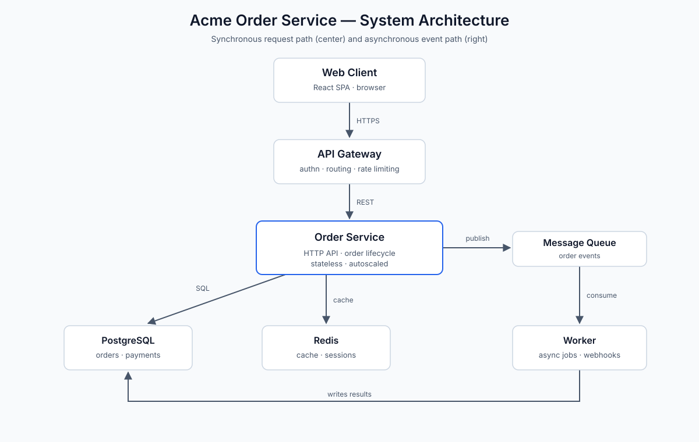
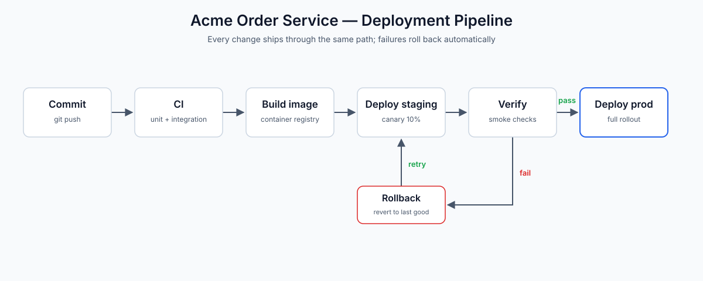

Acme Order Service — Architecture (v1)¶
Status: Superseded by v2 · Owner: Platform Team · Last reviewed: 2026-06-15
Version
You are reading the previous (v1) architecture. This revision predates the move to asynchronous event processing. View v2 (current)
This is the original design of the Acme Order Service. It was superseded by v2, which introduces the message queue and worker for asynchronous payment and webhook processing. The differences are called out in the What changed in v2 section at the end.
Overview¶
The Acme Order Service is a backend service that owns the order lifecycle for the Acme storefront: creating orders, validating them, capturing payment, tracking fulfillment, and notifying customers of status changes. It sits between the customer-facing web client and the data stores, and it is the single source of truth for order state.
In this (v1) design the order lifecycle is handled synchronously: a single request path runs the whole flow — validation, payment authorization, fulfillment, and customer webhooks — before responding to the client.
System Architecture¶

Component inventory¶
| Component | Technology | Responsibility |
|---|---|---|
| Web client | React SPA | Customer-facing storefront |
| API gateway | Envoy | Auth, routing, rate limiting, TLS |
| Order service | Go (HTTP) | Order lifecycle API; persists orders |
| PostgreSQL | PostgreSQL 16 | System of record for orders, payments |
| Redis | Redis 7 | Session store, hot order cache |
Component notes¶
- Web client. A React single-page app running in the browser. It is the only component that talks to the API gateway directly; all traffic is HTTPS.
- API gateway. Terminates TLS, authenticates requests, enforces rate limits, and routes to the order service. It is intentionally thin: no business logic lives here.
- Order service. A stateless Go service that owns the order lifecycle. It validates incoming orders, persists them to PostgreSQL, authorizes payment with the payment provider, and calls customer webhooks — all within the request.
- PostgreSQL. The system of record. Every order state transition is a row update, so the database is the source of truth for order status.
- Redis. Caches hot order lookups and holds session data.
Service configuration¶
service:
name: order-service
env: production
replicas: 4
port: 8080
database:
host: orders-db.internal
port: 5432
database: orders
pool_size: 20
statement_timeout_ms: 5000
cache:
host: orders-cache.internal
port: 6379
session_ttl_seconds: 3600
order_cache_ttl_seconds: 300
payment:
provider: acme-payments
timeout_ms: 5000
retries: 2
webhooks:
timeout_ms: 3000
max_retries: 3
Data Flow¶
Order lifecycle¶
An order moves through five states: created → validated → paid →
fulfilled → completed, with cancelled reachable from created or
validated. In v1 the whole lifecycle runs inside a single request:
A few properties follow from this flow:
- The customer waits for the entire lifecycle (payment + webhook) before
getting a response, so
POST /ordersis slow and its latency is bounded by the slowest third-party call. - A payment-provider or webhook outage directly fails order placement.
- Retries are limited to the HTTP request itself; there is no durable requeue for the slow work.
Deployment¶
Every change ships through the same pipeline, shown below. Failures at the verification stage roll back automatically; there is no manual promotion step.

The pipeline stages are:
- Commit — a change lands on
mainvia a reviewed pull request. - CI — unit and integration tests run against the change.
- Build image — a container image is built and pushed to the registry.
- Deploy staging — the image is deployed to staging as a 10% canary.
- Verify — smoke checks run against the canary.
- Deploy prod — on a pass, the image rolls out to production. On a fail, the pipeline rolls back to the last good image.
Design Decisions¶
ADR-001: Stateless order service behind a thin gateway¶
Context. The order service handles bursty traffic and must scale quickly without losing in-flight requests.
Decision. The order service is stateless: all state lives in PostgreSQL, and session data lives in Redis. The API gateway is kept thin so that scaling the service is a matter of adding replicas.
Consequences. Scaling is trivial and deploys are rolling, with no session affinity.
ADR-002: Synchronous payment and webhook handling¶
Context. Keeping the design simple was the priority for the first revision; a single request path was easiest to reason about and operate.
Decision. Payment authorization and customer webhooks are called
synchronously within the POST /orders request.
Consequences. The request path is simple and there is no eventual consistency. The cost is that order placement is slow and fragile: any payment-provider or webhook outage fails the order, and there is no durable retry for the slow work.
What changed in v2¶
- Asynchronous event path. v2 adds a message queue (RabbitMQ) and a
worker so that payment, fulfillment, and webhooks run out of band. The
customer gets a
202 Acceptedas soon as the order row is written. - Durability and retries. Slow work is retried independently with exponential backoff and a dead-letter queue, instead of failing the request.
- Eventual consistency. v2 trades the synchronous guarantee for fault isolation; the database remains the source of truth.
See the current (v2) architecture for the full details.